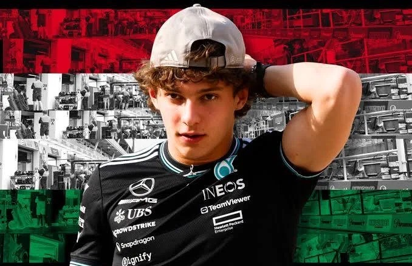
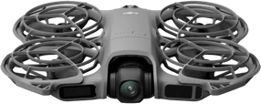
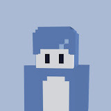
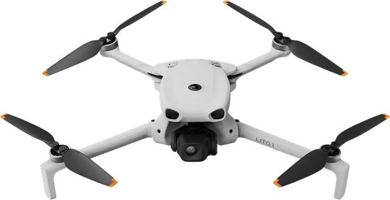
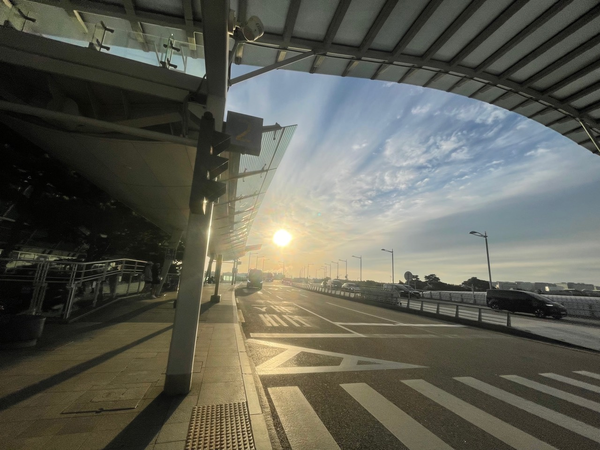
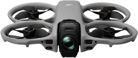

AIR SKY / 01
ANT
Team owner
F1을 좋아해서 ANT라는 이름을 지었습니다. 좋아하는 레이스를 챙겨보는 것만큼, 드론을 들고 촬영을 다니는 것도 좋아합니다.
새로운 장소를 찾아가 하늘에서 풍경을 바라보고, 지상에서는 놓치기 쉬운 장면을 담는 시간을 즐깁니다.
기체:
Dji Neo 2

 홈으로 ↗
홈으로 ↗BEHIND THE CAMERA
AIR SKY의 시선을 만드는 사람들.

AIR SKY / 01
Team owner
F1을 좋아해서 ANT라는 이름을 지었습니다. 좋아하는 레이스를 챙겨보는 것만큼, 드론을 들고 촬영을 다니는 것도 좋아합니다.
새로운 장소를 찾아가 하늘에서 풍경을 바라보고, 지상에서는 놓치기 쉬운 장면을 담는 시간을 즐깁니다.
기체:


AIR SKY / 02
Team owner
유튜브 ‘뜯어봅시다’를 운영하고 있는 Se7입니다.
기체:


AIR SKY / 03
Co-owner
안녕하세요, AVATA입니다!
기체:
